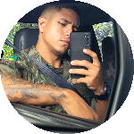

Quem sou eu?
Me chamo Lucas menezes, tenho 23 anos. Sirvo no CtecCFN, quartel da Marinha em Parada de Lucas/RJ. Sempre tive o sonho de atuar na área de ADS, porém nunca tive oportunidade. Hoje em dia eu faço curso de ADS na UNISUAM, visando sempre sair das forças armadas.
Como falar comigo?
 /lucas.menezes Me acompanha lá no FaceBook
/lucas.menezes Me acompanha lá no FaceBook /lucas_mnzs_ Me segue lá no Instagram
/lucas_mnzs_ Me segue lá no Instagram